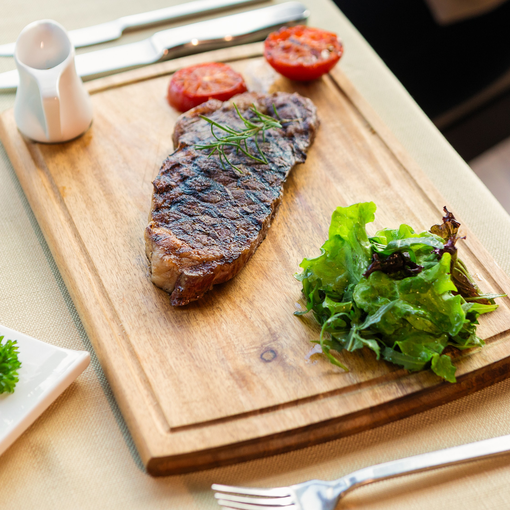

Grilled Steak
Recipes

Description
Our Grilled Ribeye Steak is juicy and decadent with a rich garlic butter sauce and brown sugar steak rub that leaves you craving bite after bite! We'll show you how to cook ribeye steak on the grill, so perfectly, it will remind you of your favorite steakhouse steak. It's easy and takes under an hour. You will want to stay home and enjoy this ribeye over and over again!
Ingredients
- boneless ribeye
- sea salt
- brown sugar
- garlic powder
- garlic salt
- onion powder
- tumeric
- paprika
- chili powder
- red pepper flakes
Steps
- let steak come to room temp (~30 min)
- mix together all seasoning
- rub seasoning all over steak
- grill on high heat (~450-500 degrees) for 3 minutes on each side
- lower heat to medium-low and finish steak (135 degrees for medium rare)
- let steaks sit for 10 minutes before serving